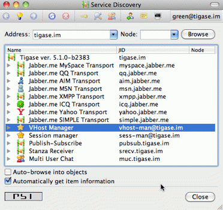
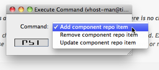

Table of Contents
Wojciech Kapcia <wojciech.kapcia@tigase.org> v2.0, June 2014: Reformatted for AsciiDoc. :toc: :numbered: :website: http://tigase.net :Date: 2012-08-23 21:13
For everybody interested in using our service to host own XMPP domain I have good news. You do not have to ask administrator to add your domain or add users for your domain anymore. You can do it on your own.
Please note, this is very new stuff. Something may go wrong or may not be polished. Please report any problems, notices or suggestions.
This is the guide to walk you through new functions and describes how to add a new domain and new users within your domain.
You can do all the stuff from your XMPP client or you can use our WebApplication that allows you to connect to the service and execute admin commands. I recommend Psi because of its excellent support for parts of the XMPP protocol which are used for domains and users management. You may use any other client as well, there is no limitation but I can only offer support and help if you use Psi client.
Secondly, you need an account on the server. This is because all the commands and features described here are available to local users only. Therefore, if you do not have a registered domain with us yet, please go ahead and register an account on the website either the Jabber.Me or Tigase.IM.
Once you register an account on one of the websites connect to the XMPP server using the account on the Psi client. I have an example, nice account: green@tigase.im which is used for this guide.
When you are ready right click on the account name in Psi roster window to bring up context menu. Select Service Discovery element.
A new windows pops up as in the example on the right. Service discovery window is where all the stuff installed on XMPP service should show up. Most of elements on the list are well known transports, MUC and PubSub components. The new stuff on the list, which is interesting for us now, are 2 elements: VHost Manager and Session Manager.

VHost Manager component in the Tigase is responsible for managing and controlling virtual hosts on the installation. It provides virtual hosts information to all other parts of the system and also allows you to add new hosts and remove/update existing virtual hosts.
Session Manager component in the Tigase is responsible for managing users. In most cases online users but it can also perform some actions on user repository where all user data is stored.
Select VHost Manager and double click on it. A new windows shows up (might be hidden behind the service discovery window). The window contains another menu with a few items: Add…, Remove… and Update… . These are for adding, removing and updating VHost information. For now, just select the first element Add….

Press Execute and you get a new window where you can enter all of your VHost configuration details. I think all the fields are pretty much self explanatory. Leave blank field for Other parameters for now. Owner is you, that is Jabber ID which controls the domain and can change the domain configuration settings or can remove the domain from the service. Administrators field can be left blank or can contain comma separated list of Jabber IDs for people who can manage users within the domain. Of course the owner can always manage users for his domain too.

When you are ready press Finish button. All done, hopefully. You can get either a window confirming everything went well or a window printing an error message if something went wrong. What can be wrong? There are some restrictions I decided to put on the service to prevent abuse. One of the restrictions is the maximum number of domains a user can register for himself which is 25 right now. Another restriction is that the domain which you add must have a valid DNS entry pointing to our service. The //////// add XMPP guide describes all the details about DNS settings. Please refer to these instructions if you need more details.